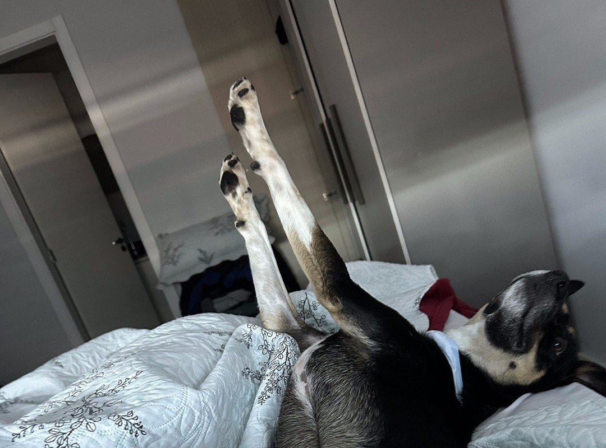

Conhece uma ONG ou protetor sério nas cidades atingidas?
Me manda no direct. Eu confiro e ajudo a divulgar.
Animal ilhado ou em perigo: 193 ou 199. Não se arrisque na água.

Zoe | Causas Animais@souazoe.pf
Seguir
ninguém fica pra trás.